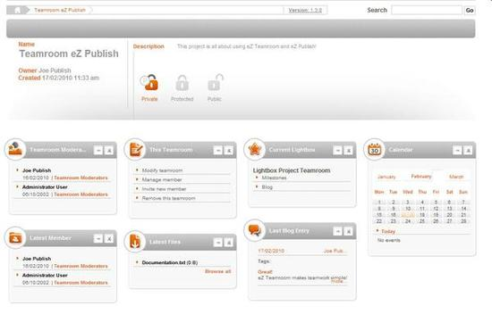
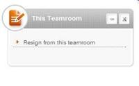

Teamroom Frontpage
To visit the teamroom frontpage you have access to from the user page, select the teamroom from either All Teamrooms or My Teamrooms box. It is also possible to access them via the links My Teamrooms and Sitemap in the upper right corner of your screen. Then the teamroom frontpage will be displayed, which might look similar to the one shown here:

Besides a short presentation of the teamroom including the name, owner, creation date, description and access type, the user will see some boxes. By clicking on the links in the boxes you are redirected to the related articles. These boxes can be moved by drag and drop:
Teamroom Moderator box shows who the moderators are.
two versions exist of the
This Teamroom box. The first is the one displayed in the screenshot above. This box is visible for the moderators and allows them to modify the teamroom, manage membership and delete the teamroom. The second version is displayed below and is visible for regular members. This box is limited to only allowing users to leave the teamroom.

Current Lightbox box gives a list of everything that has been added to the current lightbox. This can include tasks, blog entries, milestones,... anything actually.
Calendar box is just a typical calendar which displays the month and the events of the day.
Latest Member box gives a list of the latest members who have joined the teamroom and when they joined.
Latest Files box allows you to view the most recent files and browse all uploaded files.
Last Blog Entry box displays all recent blogposts including date, tag and first sentence.
Powered by eZ Publish™ CMS Open Source Web Content Management. Copyright © 1999-2013 eZ Systems AS (except where otherwise noted). All rights reserved.